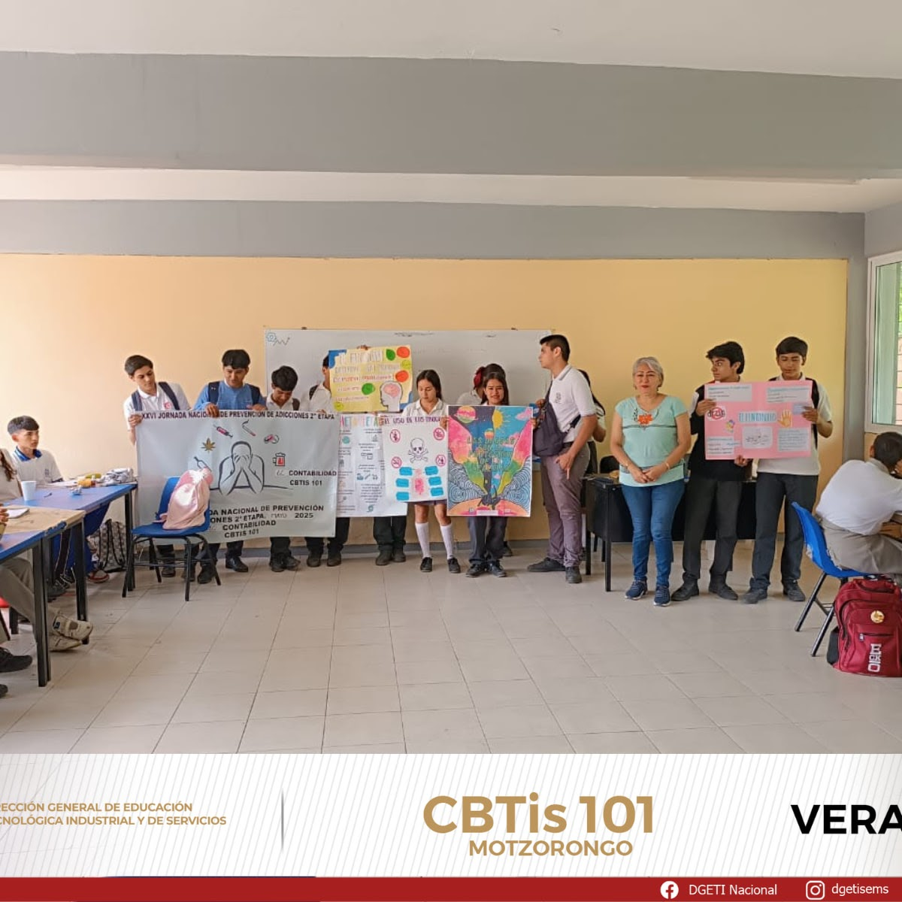
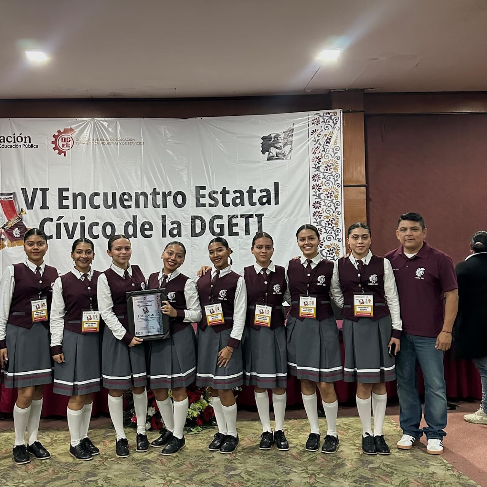

Bienvenidos al CBTIS 101
¡DGETI tiene todo lo que buscas! ¿Buscas una educación que te prepare para el futuro? ¿Te apasiona la tecnología, la ciencia o los oficios que transforman al país? Aquí encuentras eso y más. En DGETI formamos a jóvenes con visión, talento y las herramientas para destacar. Desde conocimientos técnicos hasta desarrollo humano, DGETI lo tiene todo para ti. ¡Este es tu momento, este es tu lugar! Acércate al CBTIS 101 y empieza a construir tu historia. El CBTIS 101 ofrece educación de nivel medio superior con formación técnica en áreas que permiten a los estudiantes desarrollarse profesionalmente. Las especialidades que se imparten son:
- Contabilidad
- Laboratorio Clínico
- Mecánica Industrial
- Producción Industrial de Alimentos
También promovemos actividades culturales, deportivas y académicas.
Semana Nacional de Vinculación
La Mtra. Eva García Montes y estudiantes del VI semestre de Contabilidad visitaron la Esc. Sec. Tec. No. 57 con el mensaje: "El fentanilo te mata, vive feliz, aléjate de las drogas".

Cómo parte de la Estrategia Nacional de Vida Saludable
El día de hoy los alumnos realizaron brochetas de frutas, las cuales fueron obsequiadas a toda la comunidad escolar.

Nuestra Escolta logro el Segundo Lugar A nivel Nacional
El día de hoy los alumnos realizaron brochetas de frutas, las cuales fueron obsequiadas a toda la comunidad escolar.
